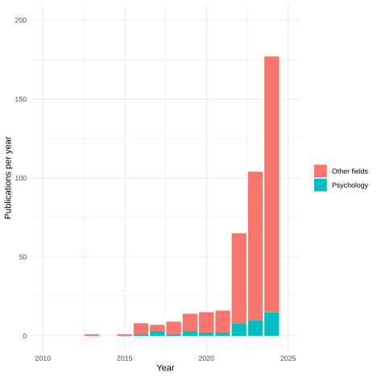
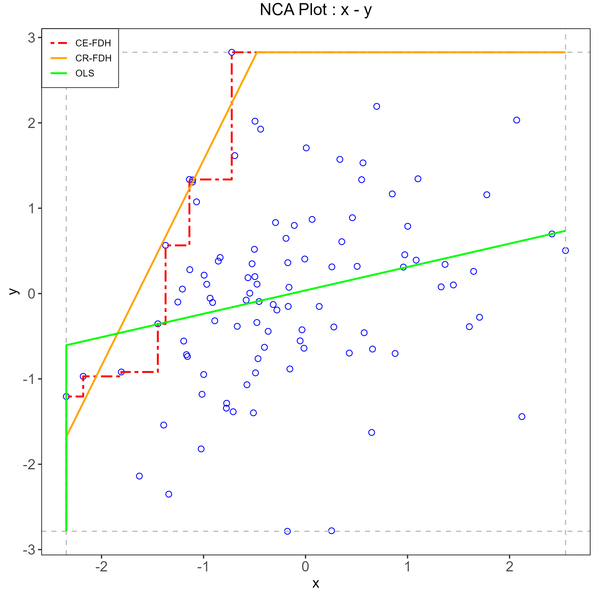
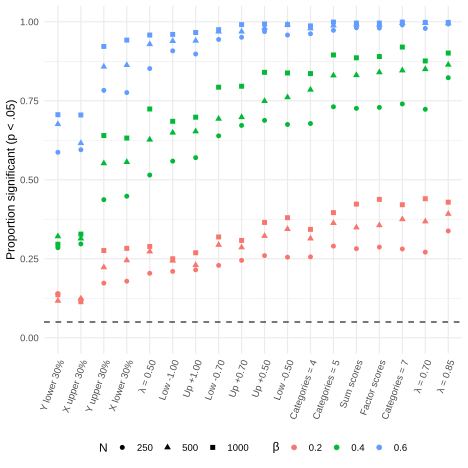
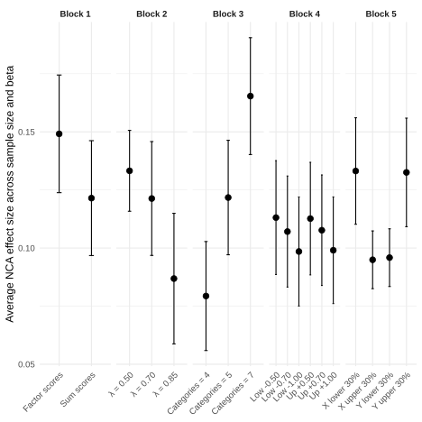
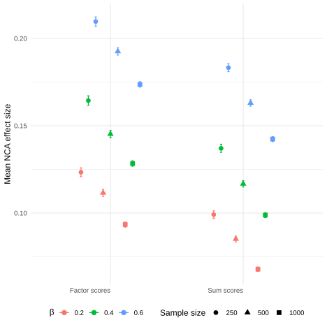
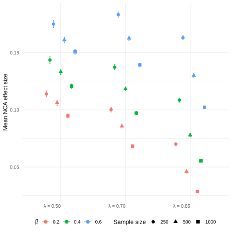
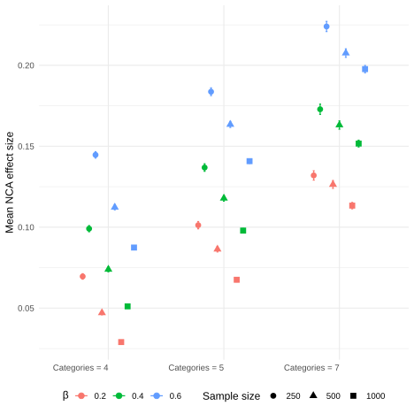
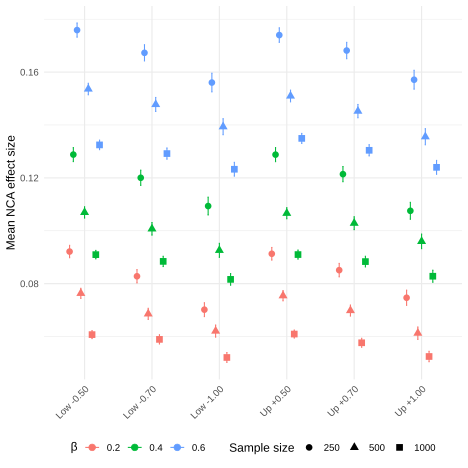
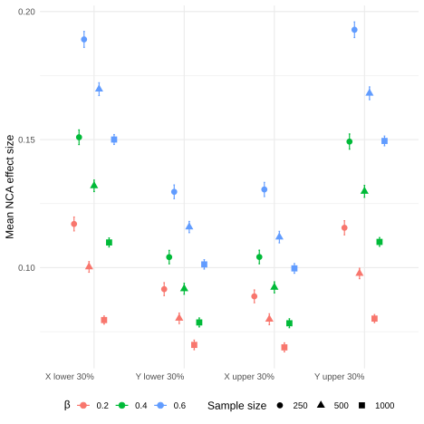
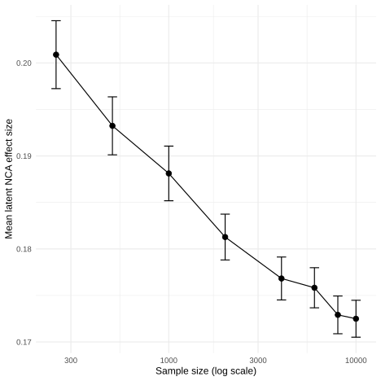

Necessary Condition Analysis With Psychological Data: A Psychometric Critique
Tommaso Feraco and Enrico Toffalini
Department of General Psychology, University of Padua
Author Note
Tommaso Feraco  https://orcid.org/0000-0002-8920-5330
https://orcid.org/0000-0002-8920-5330
Enrico Toffalini  https://orcid.org/0009-0001-4661-8063
https://orcid.org/0009-0001-4661-8063
Data, code, and materials are available at https://github.com/feracotommaso/nca. The authors have no conflict of interest to declare. The authors received no funding for this study.
Correspondence concerning this article should be addressed to Tommaso Feraco, Department of General Psychology, University of Padua, 8 Via Venezia, Padua, PD, Italy, Email: tommaso.feraco@unipd.it
Abstract
This study evaluates the interpretability of Necessary Condition Analysis (NCA) when applied to psychological data, where variables typically represent correlated latent constructs measured through imperfect instruments. Using a unified simulation framework, we simulated latent relationships between two variables under H0 for necessity while systematically varying common psychometric and sampling features, including score construction, reliability, ordinal scaling and threshold placement, skewness, and range restriction. Results showed that NCA estimates are sensitive to properties of the observed score distribution, despite identical latent associations. In particular, ordinal scaling, threshold shifts, skewness, and range restriction alter the geometry of the observed data space, producing marked changes in estimated necessity effects. Reliability and score construction also contribute to deviations, although to a lesser extent. Both effect sizes and significance results are influenced by sample size and by the strength of the latent association, even though the data-generating process does not contain any true necessity relation. These findings suggest that, in psychological applications, NCA results can reflect simple associations without necessities or distributional features induced by measurement and sampling rather than stable properties of underlying constructs. We conclude that NCA may be descriptively informative when interpreted as a property of a specific observed-score space, but that construct-level necessity claims require, at minimum, independent boundary-type theory, strong psychometric justification, and transparent robustness checks.
Keywords: necessary condition analysis, psychometrics, measurement, meta-research
Necessary Condition Analysis With Psychological Data: A Psychometric Critique
Introduction
Necessary Condition Analysis (NCA) is rapidly becoming an attractive option for researchers who are dissatisfied with the limits of average-effect logic and who want to ask a different kind of question from the one ordinarily addressed by regression, path analysis, or structural equation modeling (see Figure 1). Rather than asking whether higher levels of a predictor are associated with or sufficient to increase an outcome on average, NCA asks whether some minimum level of a condition is required before a given level of the outcome can even occur. The language of necessity is naturally appealing in the social sciences and psychology because it offers more space for causal claims: some degree of cognitive ability is needed for creative performance, some degree of emotion regulation is needed for adaptive functioning, some degree of school engagement is needed for academic success. In this sense, the attraction of NCA is understandable. It offers a formal method for examining bottlenecks, prerequisites, constraints, and “must-have” conditions rather than only “more-is-better” relations (Dul, 2016; Dul et al., 2023).
The appeal of NCA also lies in the fact that its logic is not merely semantic. The method operationalizes necessity in a clear geometric way. If low values of a condition X are incompatible with high values of an outcome Y, then the upper-left corner of the X-Y scatterplot should be empty or nearly empty. NCA quantifies that empty region, estimates a ceiling line, and translates the geometry of the scatterplot into an effect size and a bottleneck table. This is methodologically elegant. It also makes the method highly intuitive: a predictor is considered important not because the mean of Y rises with X, but because the absence or low level of X places a hard limit on how high Y can become (Dul, 2016; Dul et al., 2023).
Yet the very features that make NCA attractive also raise a serious question for psychology. Psychological theories are usually stated in terms of latent constructs, whereas NCA is typically applied to observed scores. Even when researchers use the language of “intelligence,” “motivation,” “emotion regulation,” or “self-control,” the empirical input into NCA is generally not the construct itself, but a scale score, composite, factor score, or model-based proxy derived from a particular instrument. Whether these different representations are interchangeable and can represent trtue latent necessities is itself a psychometric question, not something NCA settles by construction (McNeish, 2023; McNeish & Wolf, 2020; Widaman & Revelle, 2022). This creates a possible mismatch between the theoretical object of interest and the empirical object to which NCA is actually applied. NCA’s own guidelines appropriately emphasize the need for theoretical justification and “meaningful data” (Dul, 2016; Dul et al., 2023; Marchetti et al., 2026). However, once the problem is framed in psychometric terms, the requirement of “meaningful data” becomes much more demanding than it first appears.
We here question what it would mean for a necessity claim to be interpretable when the variables have no natural metric, are measured through ordinal item responses, depend on identification constraints or score-construction rules, and may or may not be comparable across groups, instruments, or studies.
In sum, we argue that the interpretability of NCA becomes especially fragile in psychology because the method is applied to score geometry while psychological theories are usually about latent constructs and their relationships. Once this distinction is taken seriously, several concerns follow immediately: first, the “necessary condition” may be a property of a score rather than of a construct; second, the estimated threshold may depend on scale definition and sample range; third, because NCA relies on the boundary of the data cloud rather than on its center, the method may be unusually vulnerable to skewness, range restriction, and measurement error in the parts of the scale that matter most for the analysis; and fourth, comparability across groups or instruments may be compromised by measurement noninvariance. Finally, NCA may not be suited to unveil the true data generating process, which is presumably the main aim of psychological science (Sorjonen et al., 2017; Sorjonen & Melin, 2019). Indeed, NCA might detect necessities when the true generating process is a simple causal association (i.e., two variables are correlated, causing the top-left corner proportionally difficult to populate). Whether the method can really distinguish a correlation without necessities from a necessity condition is still substantially untested.
Hence, though the field of psychology still has not adopted such method consistently (see Figure 1), its adoption is increasing and it is already promoted in key fields such as clinical psychology (Marchetti et al., 2026). Before widespread adoption happens, a robust analysis of NCA under the lens of psychological science and measurement is more than warranted.
What NCA Estimates, Statistically
NCA is not intended to estimate average relations, conditional means, or structural coefficients. It is a method for identifying whether a condition constrains an outcome in the sense that certain outcome levels are impossible when the condition is too low. NCA focuses on bottlenecks, constraints, and prerequisites. A necessary condition is therefore not something that produces the outcome in the usual additive sense, but something without which the outcome cannot occur (Dul, 2016).
Operationally, NCA examines the geometry of an X-Y scatterplot (see Figure 2). The central empirical signature of necessity is an empty or nearly empty upper-left corner, reflecting the absence of cases with low X and high Y. This empty area is separated from the area containing observations by a ceiling line. In the original formulation, the effect size of a necessary condition is defined as the ratio of the size of the ceiling zone to the size of the total area in which observations could occur, that is,
d = C/S,
where C is the ceiling zone and S is the scope. The scope itself is defined by the minimum and maximum values of X and Y, either theoretically or empirically, so that S = (X_{\max}-X_{\min})(Y_{\max}-Y_{\min}). In other words, the NCA effect size is literally the proportion of the available data space that lies above the ceiling line. The larger this empty region is relative to the scope, the stronger the estimated necessity effect (Dul, 2016).
This definition has several immediate implications. First, NCA is explicitly a boundary method. It is driven by the contour of the data cloud, not by its central tendency. Second, the method depends on the representation of the variables in the observed coordinate system, because both the ceiling zone and the scope are defined in that system. Third, unlike a symmetric association measure such as correlation, necessity is directional: “X is necessary for Y” is not equivalent to “Y is necessary for X.” These properties matter enormously for psychological applications, because they imply that the observed scale definition enters directly into the quantity being estimated (Sorjonen et al., 2017).
To estimate the necessary conditions several ceiling techniques were proposed, among which CE-FDH and CR-FDH became the default nonparametric and parametric approaches, respectively. The same article also suggested generic benchmarks for effect sizes, with values below .10 described as small, values from .10 to .30 as medium, values from .30 to .50 as large, and values above .50 as very large. Importantly, for a straight ceiling line the theoretical maximum effect size is .50; larger values are expected only when the ceiling is nonlinear. These conventions are now often reproduced in applied work and shape researchers’ judgments about whether a necessity effect is substantively important (Dul, 2016; Dul et al., 2019; Marchetti et al., 2026).
NCA has also developed inferential tools (Dul et al., 2020). Dul and colleagues propose an approximate permutation test as a minimum statistical test for NCA and recommend that a condition be treated as necessary only if three requirements are met: theoretical justification, an effect size greater than zero, and a small p-value. However, the authors tested their permutation strategy for p values against uncorrelated variables or against true necessity conditions. They did not test how the test performs under a correlation scenario, which is the most typical scenario in psychological research. NCA does not imply any correlation between the variables considered.
The same article also explicitly notes that future development of NCA could include approaches that model measurement error, among other extensions. This acknowledgment is especially relevant for psychology, because it means that even within the NCA literature the current inferential machinery is not presented as fully resolving the problem of noisy measurement (Dul et al., 2020), but it also indirectly implies that NCA aims to work with latent variables and constructs but it is not.
The crucial point, then, is that NCA permutations test were not tested against a correlation scenario and that NCA estimates a property of the observed score space nor of a latent construct space. This makes the interpretive leap from “observed score necessity” and significant p values to significant “latent psychological necessities” much larger than it is often presented to be.
Why Psychological Data Are a Special Problem
The basic machinery of NCA can be described without reference to any particular discipline. In principle, the same logic can be applied to natural metrics such as years of experience, physiological indicators, or financial resources, as well as to psychometric scores. But psychological data raise special difficulties because the substantive entities of interest are usually latent constructs, whereas the data available for analysis are instrument-dependent observations. This distinction affects not only estimation, but interpretation. A necessity claim is substantively strong: it implies that an outcome level is impossible unless a condition reaches at least a certain level. In psychological research, however, both the condition and the outcome are commonly measured in ways that are model dependent, scale dependent, and potentially noncomparable across contexts. For that reason, the move from NCA’s geometry to substantive psychological inference requires much more justification than is typically acknowledged (Merkle et al., 2026), unless one is interested in the scale-specific values without any interest in generalizing to (nor informing) substantive theories or other measurement tools.
Finally, psychological data are usually assumed to be generated from causal-correlational processes and not from necessity conditions, unless clinical cut-offs are imposed.
In the next sections, we will repeat and deepen the multiple hypothetical causes of distortion of NCA estimates with psychological data.
Constructs Are Latent, but NCA Is Usually Run on Observed Scores
A first problem is ontological and psychometric at the same time. Psychological constructs such as intelligence, depression, self-efficacy, or conscientiousness are generally treated as latent variables or latent attributes, not as directly observed quantities. Even when researchers use a composite score in practice, the theoretical entity to which they wish to generalize is usually not the sum or mean of the item responses as such, but the underlying construct those items are intended to represent.
However, NCA nearly always takes scores as its inputs. NCA proponents suggest that it works on any possible measures provided the scores are valid and reliable, but does not adjudicate the psychometric adequacy of its inputs. That flexibility is useful from an applied perspective, but it also means that NCA inherits the unresolved psychometric assumptions of whatever score-construction method was used upstream (Dul et al., 2023).
For psychology, this is not a marginal concern because score construction is not a neutral preprocessing step. Sum scoring is itself a constrained latent-variable model rather than a model-free arithmetic operation (McNeish & Wolf, 2020). Unjustified sum scoring can affect validity, reliability, and classification based on score cutoffs. Every psychological scoring embodies assumptions about item equivalence, weighting, and measurement structure. If those assumptions are weakly justified, any claim that depends critically on the exact geometry of the resulting score distribution must be interpreted with caution (McNeish, 2023; McNeish & Wolf, 2020).
For NCA, this has an immediate implication. A necessity claim based on a sum score is not automatically equivalent to a necessity claim about the corresponding factor score, let alone about the latent construct itself. If different admissible score representations of the same construct yield different scatterplot geometries, different ceiling lines, or different bottleneck thresholds, then the estimated “necessary condition” is partly a function of score construction. In such circumstances, the strong substantive interpretation—“construct X is necessary for construct Y”—moves beyond what the analysis itself directly establishes. At minimum, one would need to show that the NCA result is robust across multiple defensible score representations before elevating it from a property of the score to a property of the construct.
Thresholds Are Scale-Dependent
A second strictly related problem follows from the fact that NCA thresholds are defined in the metric of the score representation. In psychometrics, however, scale is not a transparent mirror of the construct. Merkle, Winter, and Fitzsimmons show this very clearly in the context of ordinal factor analysis. They note that social scientists often treat ordinal items as though they were continuous, and they develop “integer constraints” that place latent variables on the scale of the observed, integer-coded ordinal variables (Merkle et al., 2026).
This matters enormously for NCA because the method’s effect size and bottleneck thresholds are defined in terms of the observed coordinate system. NCA’s scope is computed from the minima and maxima of X and Y, and the effect size is the proportion of that scope lying above the ceiling line. Consequently, the threshold NCA reports is inseparable from the representation of the variable on the score axis. Change the coding of the items, the range of the scale, the transformation applied to the score, or the model used to produce latent estimates, and the threshold may change as well, even if the substantive relationship between the constructs (or their necessary condition) has not.
This is a stronger problem for NCA than for many conventional analyses. In a regression model, linear rescaling of a predictor changes the regression coefficient but not the underlying fitted relation in any substantive sense. With NCA, rescaling or redefining the score affects the very quantity used to define effect size, because the scope is part of the denominator of d = C/S.
In psychology, the absence of a natural metric makes this especially problematic. A score of 3.8 on a five-point Likert average, a factor score of 0.7 in a standardized latent metric, and an IRT-based score centered at zero are not simply different labels for the same quantity. They are different representations whose relation to the underlying construct depends on model assumptions, item properties, and scaling choices. Accordingly, when a psychological NCA paper states that “a minimum of X is required for Y,” the statement should not be read as a scale-free fact about the construct unless the score metric itself has been justified as substantively interpretable. In many applied settings, the more defensible reading is narrower: “within this sample, on this instrument, under this score-construction rule, the observed score space exhibits a ceiling pattern consistent with a bottleneck.” That may still be of descriptive interest. But it is a substantially weaker claim than the construct-level interpretation that often appears in the discussion sections of applied studies (e.g. Urban & Urban, 2025).
Comparability Across Groups and Instruments Is Not Guaranteed
A third problem concerns comparability. Many psychological questions are implicitly or explicitly comparative: researchers want to make statements that generalize across age groups, genders, cultures, clinical versus nonclinical samples, longitudinal waves, or alternative instruments purportedly measuring the same construct. Yet such comparisons are warranted only if the measurement structure is sufficiently invariant. With ordinal data, this problem is particularly delicate (D’Urso et al., 2022).
This has direct implications for NCA. Suppose an NCA threshold for “self-control” is estimated in one group and then rhetorically generalized to another. If the score does not have the same meaning across those groups, then the threshold is not comparable in the first place. The same applies when different instruments are used across studies. An observed score threshold on one inventory is not automatically transportable to another inventory, even if both are intended to measure the same construct. The NCA recommendation (Dul et al., 2023) to use valid and reliable scores is therefore necessary but insufficient for psychology. Two equally valid scales for extraversion correlating 1.00 at the latent level may yield completely different NCA estimates because one is on a 7-point Likert scale and the other is a forced-choice measure or on a 4-point scale.
In sum, when researchers use different translations, response formats, item sets, or score transformations, they are often implicitly changing the metric, the scope, and possibly the construct representation itself. If NCA is then used to estimate bottleneck levels, those levels may differ not because the underlying psychological necessity relation differs, but because the measurement system differs. Therefore, any necessity claim meant to travel across populations, settings, or instruments should be preceded at least by evidence that the score space being analyzed is sufficiently comparable for such transportability to be plausible.
Sensitivity to Skewness and Distributional Shape
Sorjonen and colleagues (2017) show in a simulation study that NCA’s calculated necessity effect has a negative association with the skewness of the predictor and a positive association with the skewness of the outcome. Most importantly, they conclude that at least some findings obtained with NCA fall within the range of what can be expected from the skewness of the predictor and the outcome alone. Their explanation is intuitive: if low values of X are common because X is negatively skewed and high values of Y are common because Y is positively skewed, then the upper-left corner of the scatterplot can become sparse even when the variables are unrelated in any substantively necessary sense.
The later paper by Sorjonen and Melin (Sorjonen & Melin, 2019) extends the concern to NCA’s inferential machinery. They report that the permutation-based significance test can yield significant results even when the true population necessity effect is very weak, and that in some situations the significance of the necessity effect increases with a greater degree of sufficiency, which they regard as paradoxical for a method aimed at identifying necessary but not sufficient conditions.
These concerns are particularly important in psychology because nonnormality is not an exotic edge case (Cain et al., 2017; Toffalini et al., 2024). Although NCA does not assume normality, the kinds of distributional asymmetries that are routine in psychological data—but are not properties of the constructs—are exactly the kinds of features that can create or exaggerate the sparse-corner patterns on which NCA relies (Sorjonen et al., 2017; Sorjonen & Melin, 2019).
This issue is especially relevant for clinical and developmental measures, where skewness is often not merely an accidental feature of the sample. It can be a consequence of the instrument’s purpose. Screening tools, symptom scales, and clinical questionnaires are often designed to discriminate particularly well near clinically relevant regions, such as high symptom severity or low functioning, rather than to provide equally precise measurement along the entire continuum. As a consequence, floor effects, ceiling effects, and asymmetric score distributions may reflect deliberate measurement design. If such distributions contribute to an empty corner, the NCA result may partly reflect where the instrument is most informative, or least informative, rather than a boundary in the latent psychological process.
This should change how psychological researchers think about an empty corner. In a domain with natural metrics and relatively well-behaved distributions, an empty upper-left region may plausibly reflect a genuine constraint. In psychology, however, the same geometry may arise because the predictor is bounded and concentrated at the high end, because the outcome is bounded and concentrated at the low end, or because the response categories compress information. None of these explanations is inconsistent with the NCA pattern as such.
Sensitivity to Range Restriction and Sample Composition
Another source of fragility is range restriction. NCA’s effect size depends on the scope, which is defined by the observed or theoretical minima and maxima of the variables. This means that the magnitude of the necessity effect and the associated thresholds are not immune to the composition of the sample.
In psychology, range restriction is often structural rather than accidental. Researchers may study high-achieving students, patients meeting diagnostic cutoffs, individuals selected into treatment, or convenience samples drawn from university populations. Many psychological scales also have bounded ranges and exhibit floor or ceiling effects in ordinary use. Under such conditions, the observed minima and maxima of the scores define the coordinate system in which the necessity effect is calculated. A bottleneck that appears substantial within a restricted sample may look weaker in a broader sample, because the empirical range changes.
Sample composition is also rarely representative because psychological constructs frequently covary with background characteristics that influence both score distribution and the likelihood of inclusion in the sample. For example, age, education, language background, or clinical severity can affect not only the average level of a measure but also individuals’ propensity in participating in studies. If NCA is applied without attending to these issues, the estimated effects may partly reflect who was sampled rather than a general feature of the construct relation.
Sensitivity to Measurement Error Near the Boundary
An additional source of fragility concerns measurement error. NCA is a boundary method, so its inferential weight is concentrated on a relatively small number of cases lying near the ceiling. Errors affecting those cases can have disproportionate consequences for the location of the ceiling line, the size of the empty corner, and the resulting bottleneck values.
In psychology, measurement error is intrinsic to the process of using item responses to infer latent scores. Moreover, the precision of psychological scores often varies across the score distribution (McNeish & Dumas, 2025). This observation is especially relevant for NCA because the method effectively asks the analyst to pay special attention to certain extreme parts of the range, which are also the less reliable.
If scores near the relevant ceiling region are measured less precisely than scores elsewhere, then the geometric pattern that NCA interprets as evidence of a bottleneck may partly be a by-product of differential precision. Likewise, if a few cases appear in the ostensibly empty upper-left corner because of response noise, careless responding, or unstable measurement at the extremes, the analyst faces a difficult interpretive choice: treat them as substantive falsifications of necessity, or treat them as measurement artifacts (Dul, 2016). The original NCA framework acknowledges the possibility of outliers and even discusses “virtually necessary” conditions in stochastic terms. But in psychological data, the outlier-versus-error distinction is often not adjudicable from the score data alone.
Rationale of the Study and Hypotheses
The preceding arguments raise two concerns regarding the application of NCA to psychological data.
First, NCA may not clearly distinguish between correlational relationships and necessity conditions. A positive association will typically produce a sparsely populated upper-left region even in the absence of a true necessity relation. The extent of this empty space depends on sample size and association strength, reflecting a probabilistic feature of the joint distribution rather than a deterministic constraint. As sample size increases, observations are more likely to appear in this region.
Second, NCA estimates may be sensitive to standard psychometric features of psychological measurement. Observed scores are constructed from ordinal items and depend on design choices such as score construction, item loadings (reliability), response formats, threshold placement, and sample composition. If NCA is to support construct-level interpretation, its estimates should remain relatively stable under such variations. This assumption is examined here by systematically manipulating these features while holding the underlying latent association constant.
Based on these considerations, we formulate the following expectations.
Under a purely correlational data-generating process without a necessity relation, the proportion of statistically significant NCA results will exceed the nominal alpha level (5\%).
Assuming we can describe a corelational effect as NCA, the effect size estimates will vary across psychometric conditions, even when the latent association is held constant.
NCA effect sizes will increase with the strength of the latent association but decrease with increasing sample size, as larger samples are more likely to populate the boundary region that defines the NCA effect.
To evaluate these expectations, we conducted a simulation study using a unified paired design.
Simulation Study
Simulation design
Each replication followed the same sequence. First, we generated one latent paired dataset for a predictor construct X and an outcome construct Y. Second, we estimated a latent-reference NCA effect on those latent variables. Third, starting from that same latent dataset, we generated multiple observed versions of the variables by altering one psychometric feature at a time. Fourth, we re-estimated NCA on each observed-score dataset. Because all observed conditions within a replication were derived from the same latent source, differences among conditions can be directly attributed to the measurement or sampling manipulation rather than to differences in the underlying latent relation. For each single condition, we repeated the process 1,000 times for a total of 171,000 NCA analyses (3 sample sizes * 3 beta values * 19 conditions * 1,000).
For the simulation, we manually defined the main functions to estimate NCA effect sizes and permutation-based p-values. This was done to speed up the simulation. A small replication using 1,000 iterations and 1.000 permutations per test yielded perfect correlation for effect sizes estimated using the NCA package and our function and a correlation > 0.999 for the p values.
Latent data-generating model
For each replication, latent data were generated from a simple linear model. A latent predictor \eta_X was sampled from a standard normal source and standardized within replication. A latent outcome \eta_Y was then generated as \eta_Y = \beta_\eta X + \epsilon, where \beta controlled the strength of the latent association and the residual variance was chosen so that the population variance of \eta_Y was approximately one and the association could be interpreted as a correlation coefficient. This specification does not impose a latent necessity structure. Instead, it creates a stable latent relation and then asks how NCA behaves when the observed-score representation of that relation is altered. The latent-level NCA effect can therefore be interpreted as a benchmark [though spurious] quantity for each replication, not as a theoretical “true necessity” parameter in a population model.
Sample size and latent association strength were treated as outer design factors. The simulation crossed sample sizes of n = 250, 500, and 1000 with latent association values of \beta = 0.20, 0.40, and 0.60. For each design cell, 1,000 replications were generated. This yielded a broad set of conditions ranging from relatively weak to moderate latent associations and from common to comparatively large sample sizes in psychological research.
Measurement model and observed-score construction
Observed variables were generated from the latent variables through a unidimensional ordinal item model. For each construct, six items were simulated by combining the latent variable with item-specific residual error, y^*_{ij} = \lambda_j \eta_i + e_{ij}, where \lambda_j denotes the item loading and the residual variance was set to 1-\lambda_j^2. The continuous response propensities y^*_{ij} were then discretized into ordinal response categories using fixed thresholds. Unless otherwise manipulated, the baseline measurement setup used six items per scale, loadings of \lambda = 0.70, and five response categories.
Thresholds were constructed to yield an ideal response format in which middle categories were more common than extreme categories. Observed scale scores were then formed from the item responses. Sum scores were used as the default representation throughout the simulation, and factor scores were included only in the score-construction block as an alternative scoring method. Factor scores were obtained from separate one-factor confirmatory factor analyses for the X and Y item sets, estimated with an ordinal-data CFA model using WLSMV.
Experimental blocks
All manipulations were implemented one factor at a time, with the remaining psychometric features held at their baseline values. This made it possible to isolate how much each feature alone altered the NCA estimate relative to the latent-reference effect.
Score construction
The first block examined whether the estimated NCA effect depends on how the same observed item responses are converted into scale scores. Using the same item-level data, we computed both sum scores and model-based factor scores and applied NCA to each representation. This block therefore isolates score-construction dependence while holding the latent data, item parameters, and ordinal responses fixed.
Reliability and loading strength
The second block varied loading strength to assess the role of measurement quality. Loadings were set to \lambda = 0.50, 0.70, and 0.85, representing comparatively weak, moderate, and strong measurement. All other aspects of the measurement model were held constant, and observed variables were formed as sum scores. Because lower loadings increase the amount of item-specific noise in the observed scores, this block evaluates whether measurement error alters the empty-corner geometry on which NCA relies.
Number of response categories
The third block varied the number of ordinal response categories while holding the latent relation and baseline loading structure constant. We compared scales with 4, 5, and 7 response options. If NCA estimates depend on whether the construct is measured with four, five, or seven categories, keeping all other measurement properties fixed, then the resulting necessity claim becomes partly a function of questionnaire design.
Threshold placement and induced score asymmetry
The fourth block examined the effect of threshold placement. Here the number of response categories was held constant and the full set of thresholds was shifted upward or downward, thereby changing how easily low, middle, and high observed responses were endorsed. We calibrated three levels of threshold severity so that, under the baseline measurement setup, the resulting sum scores exhibited approximately mild, moderate, and strong asymmetry, targeting observed skewness values around 0.25, 0.40, and 0.60. Both lower and upper shifts were examined, so that asymmetry could be induced in either direction.
Item wording, endorsement difficulty, and response-style effects can all change where thresholds fall, even when the underlying latent relation remains the same. Accordingly, we do not treat skewness as a latent-distribution manipulation. Instead, we evaluate whether NCA changes when asymmetry is introduced through the measurement layer itself.
Range restriction and sample composition
The fifth block addressed range restriction. Starting from the same latent dataset, we selected subsamples by restricting either the latent predictor or the latent outcome to lower- or upper-range segments. Operationally, restrictions were implemented on the latent variables using percentile cutoffs that retained approximately 70% of cases in each selected sample. We considered four restriction conditions: lower-range and upper-range restriction on \eta_X, and lower-range and upper-range restriction on \eta_Y.
This decomposition makes it possible to separate changes due to sample selection from additional changes introduced by measurement and scoring after selection. However, this manipulation also affects sample size, which may also affect the results compared to the other manipulations.
NCA estimation and evaluation criteria
All NCA estimates were computed with a single ceiling technique, the nonparametric CE-FDH method. We selected this estimate as it is the most widely used and its use is suggested for psychological data and the permutation significance test was developed for this ceiling technique (Dul, 2016; Dul et al., 2023; Marchetti et al., 2026). The primary outcome considered was the NCA effect size d, defined as the proportion of the observed scope occupied by the ceiling zone. In addition, we stored descriptive properties of the analyzed X and Y distributions, including their means, standard deviations, skewness, and kurtosis.
For each observed condition, we also retained the difference between the observed effect and the latent full-sample reference. For range-restriction conditions, we also retained differences from the condition-specific latent restricted-sample reference.
For each replication, the permutation-based significance test developed by Dul and colleagues (Dul, 2016) was applied using 10.000 permutations to obtain precise estimates of p values.
All results are available on the GitHub page of the project (https://github.com/feracotommaso/nca). Here we will focus on significance tests and the stability of the effect sizes.
A critical caveat
As previously highlighted, we did not simulate any necessity scenario. Our data-generating process does not imply the existence of any necessary condition in the observed data but only latent associations between the data. As a consequence, any presence of a necessity effect is, by definition, a false positive.
Results
The complete set of results, Tables, and simulation code is available in the project repository (https://github.com/feracotommaso/nca). Here we focus on the analysis of false positives and the main descriptive pattern of effect sizes.
False Positive Analysis
The results of the permutation-based significance test for NCA proposed by Dul and colleagues (2020) are summarized in Figure 3. Three main findings emerge.
Across all conditions, the proportion of statistically significant NCA effects largely exceeded the nominal 5% level, despite the absence of any necessity condition in the data-generating process.
The probability of obtaining significant results increased with both sample size and the strength of the latent association. For example, when N = 1000 and \beta = 0.60, nearly all replications yielded statistically significant p-values, thereby supporting a non-existent necessity condition.
Statistical significance also varied across psychometric conditions, beyond the effects of sample size and latent association. Conditions involving range restriction—resulting in an approximately 30% reduction in sample size—tended to produce lower p-values. Compared to the other conditions, lower proportions of significant results were also observed under skewed distributions.
Analysis of the Effect Sizes
Figure 4 reports a compact summary averaged across sample-size and latent-association conditions.
Across all summarized conditions, the average observed NCA effect ranged from 0.08 to 0.17, even though the underlying latent relation was fixed within each block.
Block 1: Score construction
For score construction, factor scores consistently produced larger effects than sum scores when latent association and sample size were held constant (see Figure 5). Averaged across design cells, factor scores yielded d = 0.15 compared with d = 0.12 for sum scores, a difference of 0.03 and a relative increase of about 23% over the sum-score condition. This is a nontrivial shift given that both scores were computed from the same item responses. In substantive terms, the apparent strength of the necessity relation depended partly on the scoring rule rather than only on the latent relation itself.
Figure 5 also shows that both score types followed the same general trend across design cells: effect sizes became smaller when the latent association was weaker and when sample size was larger.
Block 2: Loadings and reliability
When loading strength was varied, the estimated NCA effect changed in the opposite direction from what might be expected if stronger measurement simply sharpened a construct-level necessity relation (see Figure 6). Averaged across sample sizes and latent associations, the mean effect was d = 0.13 at \lambda = 0.50, d = 0.12 at \lambda = 0.70, and d = 0.09 at \lambda = 0.85. The change from the lowest to the highest loading corresponded to a reduction of 0.05 in the average observed effect size (35%).
This pattern indicates that improving the measurement relation between items and the latent variable did not make the observed NCA effect converge upward on some stable construct-level quantity. Instead, the estimated effect shrank as the scale more closely reflected the underlying latent variable. The cell-level figure showed the same general dependence on \beta and sample size observed elsewhere, but the main result is that reliability itself materially changed the apparent necessity effect.
Block 3: Number of response categories
The number of available response categories had one of the largest effects in the entire simulation (see Figure 7): the average observed effect was 0.08 with four categories, 0.12 with five categories, and 0.17 with seven categories. Moving from four to seven categories therefore increased the average NCA estimate by 0.09 without any change in the latent relation.
This result is especially important for psychological research because the difference between 4-, 5-, and 7-point scales is usually treated as a routine instrument-design choice rather than as a substantive theoretical manipulation. Here, however, that routine choice was enough to move the NCA estimate from a small effect to the upper part of the medium range, despite no change in the latent relation. As in the previous blocks, the figures also showed smaller effects at lower \beta values and at larger sample sizes.
Block 4: Threshold shift
In the fourth block (see Figure 8), response styles were shifted toward higher or lower categories, thereby inducing the kind of asymmetry often observed in Likert data. The impact on NCA was more modest than in some other blocks, but still systematic. For lower shifts, the mean effect was 0.11, 0.11, and 0.1 for magnitudes of 0.50, 0.70, and 1.00, respectively; for upper shifts, the corresponding values were 0.11, 0.11, and 0.1. The pattern was nearly symmetric across lower and upper shifts, with the largest shifts reducing the average observed effect to about 0.1.
Again, smaller latent associations and larger sample sizes were associated with smaller observed NCA effects.
Block 5: Range restriction
In the final block (see Figure 9), we induced range restriction by excluding either the lower or upper 30% of the population on X or Y. This manipulation substantially changed the observed NCA estimates. Averaged across sample sizes and latent associations, the mean effect was 0.13 when the lower 30% of X was excluded, 0.09 when the upper 30% of X was excluded, 0.1 when the lower 30% of Y was excluded, and 0.13 when the upper 30% of Y was excluded. The difference between the larger-effect and smaller-effect restriction conditions was therefore about 0.04.
This result shows that the NCA estimate depended not just on whether the sample was restricted, but on which portion of the latent distribution was underrepresented. In other words, the method was sensitive to sample composition in a way that directly affected the apparent size of the empty corner. For psychological applications, this implies that necessity claims may partly reflect selection into the sample rather than a stable feature of the construct relation.
Sample size considerations
From the previous simulation blocks, a paradoxical problem emerged: the effect size estimates varied as a function of sample size. We therefore extended the basic simulation across multiple sample sizes. Using a fixed \beta = 0.40 latent association and estimating NCA directly on the latent variables, the mean effect decreased from 0.2 at N = 250 to 0.18 at N = 2000, and it continued to decline up to 0.17 at N = 10000 (see Figure 10).
This pattern is difficult to reconcile with the idea that d captures a stable population feature of a necessity relation. If the underlying latent relation is held constant and the estimate nonetheless declines as more data are observed, then the NCA effect cannot be interpreted straightforwardly as a sample-size-invariant construct property. Instead, it appears to depend partly on the probability that increasingly large samples will populate regions of the X-Y space that smaller samples leave empty by chance. This strengthens and integrates the broader conclusion of the previous results: in psychological data, NCA often tracks properties of samples and observed-score geometries rather than stable properties of latent constructs.
Discussion
The present study examined two simple but consequential questions for psychological research: do NCA analyses discriminate pure correlations from necessity conditions? And, how much can the estimated NCA effect change solely because the observed variables are scored, discretized, or sampled differently? Across all simulation blocks, the answer to both questions was clear: NCA often detects necessity effects under a ‘simple’ correlation design; And the observed NCA effect is not stable, but changes as a function of score construction, loading strength, number of response categories, threshold placement, range restriction, and sample size. This is exactly the pattern one would expect if NCA in psychology is operating primarily on the geometry of observed-score distributions rather than on a construct-level necessity relation.
The first implication is fatal for NCA analyses: Under the common scenario of correlated variables, NCA detects necessity conditions that do not exist and false positives increase with increasing correlation values and sample size, meaning that the larger the sample the higher the probability of drawing wrong-and not correct or more precise-conclusions. Hence, researcher should always consider the plausibility of a simple correlation scenario before interpreting or concluding about the presence of a necessity condition.
False positives aside, the following implications are psychometric. In our simulations, factor scores yielded systematically larger effects than sum scores, despite being computed from the same item responses, with mean effects of about 0.15 and 0.12, respectively. Likewise, routine questionnaire design choices mattered substantially: moving from four to seven response categories increased the average observed effect from about 0.08 to 0.17, and threshold shifts that induced plausible skewness in either direction still altered the estimated effect in a systematic way. These are not exotic manipulations. They are ordinary features of psychological measurement. If an NCA estimate changes this much when the scoring rule or response format changes, then the resulting necessity claim cannot be treated as a stable property of the latent constructs alone.
The reliability block strengthens that conclusion further. When loadings increased from .50 to .85, the mean observed effect decreased from about 0.13 to 0.09. In other words, improving the relation between the items and the latent variable did not make the observed NCA estimate converge upward on a clearer construct-level quantity. It moved in the opposite direction. That result is especially problematic for psychological applications, because it implies that stronger measurement does not reveal a hidden necessity relation more cleanly. Instead, the observed necessity effect may partly depend on the distortions introduced by noisier measurement.
The range-restriction results point to a parallel sampling problem. Excluding the lower 30% of the latent predictor or the upper 30% of the latent outcome produced average effects of about 0.13, whereas excluding the upper 30% of the latent predictor or the lower 30% of the latent outcome produced effects closer to 0.10. Thus, NCA was sensitive not only to whether the sample was restricted, but to which part of the distribution was missing. In psychological research, where convenience samples, selective participation, institutional filters, and attrition are common, this is a serious concern. Apparent bottlenecks may partly reflect how the sample was composed rather than any stable necessity structure in the underlying constructs.
The most damaging result, however, may be the sample-size pattern. In the latent-only extension, with the latent relation fixed at \beta = 0.40, the mean NCA effect decreased from about 0.20 at N = 250 to about 0.18 at N = 2000, and then continued to decline to about 0.17 by N = 10000. That pattern is difficult to reconcile with the idea that NCA is estimating a stable population feature. If the data-generating relation is unchanged but the effect shrinks as more observations are collected, then the estimate is at least partly a function of finite-sample sparsity. Larger samples are simply more likely to populate regions of the X-Y space that smaller samples leave empty by chance. Under ordinary stochastic relations, the empty corner is therefore not strong evidence for an underlying necessity structure; it is often evidence that the sample has not yet filled the corner.
This result also clarifies a deeper theoretical issue. The simulations did not generate any true necessity process. The latent data-generating model was associational and stochastic, not boundary-based, and we explicitly acknowledge that any detected necessity effect is therefore, in that strict sense, a false positive. That caveat is not incidental. It reveals that the central question is not merely whether NCA is statistically sensitive, but whether a necessity model is theoretically admissible in the first place. A directional or even causal hypothesis is not enough. Most psychological theories imply that higher levels of one construct make an outcome more likely, more intense, or more stable on average. They do not imply that below some threshold of X, high values of Y are structurally impossible. Yet that stronger claim is what a necessity interpretation requires.
For that reason, the common suggestion that NCA can be used as a conservative add-on to regression or other average-effect models (Dul, 2016; Dul et al., 2023; Marchetti et al., 2026) is much less convincing and more damaging than it first appears. When the underlying theory is probabilistic, adding NCA does not reveal a deeper layer of causal structure. It risks redescribing the same stochastic relation in stronger language than the theory actually warrants. In that sense, NCA may be not only uninformative but counterproductive in psychological research: it can encourage researchers to speak as if they had identified a prerequisite or bottleneck when, in fact, they have only detected an observed empty corner whose size depends on scoring, thresholds, sample composition, and sample size. The present simulations show that even this conservative descriptive use is difficult to defend without unusually strong psychometric justification and extensive robustness checks.
Taken together, these results suggest that the main burden of proof should be reversed. In psychology, NCA should not be treated as an attractive supplement that becomes acceptable whenever X plausibly predicts Y. Instead, it should be reserved for situations in which the substantive theory independently implies a genuine boundary-type process: that is, a process in which some levels of the outcome are impossible, not merely improbable, below some level of the predictor. Such cases are likely to be rare. Indeed, many of the clearest “necessities” in psychology are not discovered empirical laws at all, but imposed thresholds, such as diagnostic cut-offs, selection rules, or administrative criteria. Those boundaries are often created by human classification decisions rather than uncovered from the latent structure of psychological constructs.
The practical implication is therefore not simply that researchers should be more careful when applying NCA. It is that, in most ordinary psychological applications, the method is unlikely to identify a construct-level ground truth. At best, it describes constraints in a particular observed-score space under a particular scoring rule, response format, and sample composition. At worst (but probable), it converts finite-sample sparsity and measurement artifacts into substantively inflated claims about necessity. Observed NCA effects should be interpreted primarily as properties of measurement and sampling geometry, not as evidence of latent psychological prerequisites, unless a true necessity-like data-generating process is theoretically credible before the model is fit and its estimates are robust across different psychometric conditions, samples, and sample sizes.
Declarations
Funding: The authors received no funding for this study.
Conflict of interest: The authors have no conflict of interest to declare.
Ethics approval: Not applicable
Consent to participate: Not applicable
Availability of data, code, and materials: Data, code, and materials are available at https://github.com/feracotommaso/nca
References
Figure 1
Publications per year across all disciplines and in psychology. Data were downloaded from Scopus on April 4th 2026 using “necessary condition analysis” as search term.

Figure 2
Example of an NCA plot. The scatterplot shows the relation between X and Y. NCA evaluates whether X is necessary for Y by identifying an empty upper-left region, meaning that high values of Y are absent when X is low. The ceiling lines (CE-FDH and CR-FDH) mark the estimated boundary of this empty space, while the OLS line is included only to contrast NCA with standard regression approaches.

Figure 3
Percentage of statistically significant NCA effects across conditions, as a function of sample size (N) and latent association (β), under a data-generating process without a true necessity condition.

Figure 4
Summary of the simulation results across all experimental blocks. Points show the average observed NCA effect size for each condition after averaging across sample size and latent association (𝛽); vertical intervals indicate uncertainty around these averages.

Figure 5
Effects of score construction on observed NCA estimates.

Figure 6
Effects of loading strength on observed NCA estimates

Figure 7
Effects of the number of response categories on observed NCA estimates

Figure 8
Effects of threshold shifts on observed NCA estimates

Figure 9
Effects of range restriction on observed NCA estimates

Figure 10
Sample-size dependence of the latent-level NCA effect.
